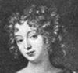

Collective Biographies of WomenAn Annotated Bibliography
Alison Booth
811.
Trowbridge, W[illiam] R[utherford] H[ayes]. Court Beauties of Old Whitehall: Historiettes of the Restoration. With 32 Illustrations. London: Unwin; New York: Scribner, 1906.
Search OCLC WorldCat for this title.
Search Google Books for this title.
Trowbridge, W[illiam] R[utherford] H[ayes]. Court Beauties of Old Whitehall: Historiettes of the Restoration. With 32 Illustrations. London: Unwin; New York: Scribner, 1906.
TOC: Hortense Mancini, Duchesse de Mazarin; Barbara Villiers, Duchess of Cleveland; "La Belle Stuart," Duchess of Richmond; "La Belle Hamilton," Comtesse de Gramont; "The Lovely Jennings," Duchess of Tyrconnel; "Wanton Shrewsbury," Anna Maria, Countess of Shrewsbury; "Madame," Henrietta, Duchess of Orleans; Louise de Kéroual, Duchess of Portsmouth.
-
 Hortense Mancini Duchess of Mazarin
Hortense Mancini Duchess of Mazarin -
My Lady Castlemaine (Barbara Villiers), Duchess of Cleveland
-
Nell Gwynn
-
The Duchess of Richmond
-
Mademoiselle de la Valliere
Search OCLC WorldCat for this title.
Search Google Books for this title.